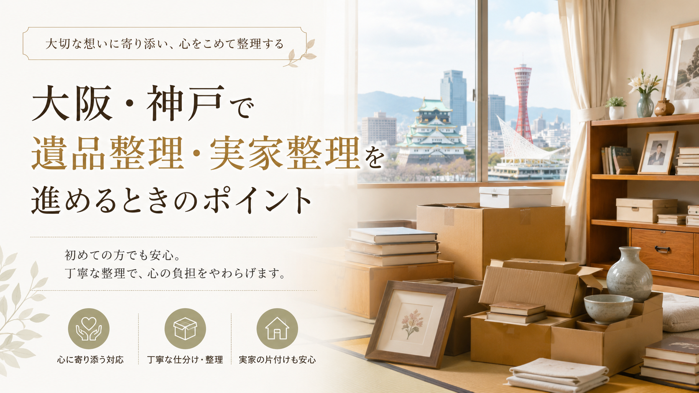

ESTATE CLEANUP / OSAKA & KOBE
大阪・神戸で遺品整理や実家整理を始める方向けの実用ガイド。家族での方針共有、重要書類・貴重品の探し方、買取できる物の確認、マンション規約、戸建ての空き家対策、遠方からの整理、見積もり時の確認、悪質業者の見分け方まで、無理なく進めるための手順とチェックポイントをまとめました。

大阪・神戸で遺品整理や実家整理を進めるときは、単に家の中の荷物を片付けるだけではなく、家族の思い出、相続、不用品の処分、買取、住まいの今後の活用まで含めて考える必要があります。
特に大阪市内、堺市、東大阪市、豊中市、吹田市、尼崎市、西宮市、神戸市などの都市部では、マンション、一戸建て、団地、長年住んだ実家など、住まいの形もさまざまです。荷物の量が多い場合や、遠方に住んでいて何度も通えない場合は、早めに全体の流れを整理しておくことが大切です。
遺品整理や実家整理は、急いで進めすぎると「必要なものまで処分してしまった」「買取できるものを捨ててしまった」「家族間で意見が合わなくなった」といった後悔につながることもあります。
まずは、何を残すのか、何を売るのか、何を処分するのかを落ち着いて分けることから始めましょう。
遺品整理や実家整理を始める前に、家族や親族の間で目的を共有しておくことが重要です。たとえば、次のような目的があります。
目的によって、整理の進め方は変わります。退去日が決まっている場合はスケジュール優先になりますが、売却前の整理であれば、家財の処分だけでなく、価値のある家具・家電・骨董品・ブランド品などを確認する余裕も必要です。
大阪・神戸エリアでは、マンションの退去、戸建ての売却、空き家整理、実家の片付けなど、状況によって必要な作業量が大きく異なります。家族の誰が立ち会うのか、誰が業者とやり取りするのか、費用はどのように分担するのかも、事前に話し合っておくとスムーズです。
本格的に片付けを始める前に、まず探すべきものは貴重品や重要書類です。特に確認したいものは次のようなものです。
探しておきたい場所：長年住んでいた実家では、押し入れ、タンス、仏壇まわり、机の引き出し、書類棚、金庫、衣装ケースなどに重要なものが残っていることがあります。見た目には不要に見える紙袋や封筒の中に、大切な書類が入っているケースもあります。
業者に片付けを依頼する場合でも、重要なものはできるだけ事前に家族で確認しておくと安心です。
遺品整理や実家整理では、多くのものを処分することになります。しかし、すべてを不用品として捨ててしまう前に、買取できるものがないか確認することが大切です。
大阪・神戸エリアでは、出張買取に対応している業者も多く、大型家具や家電、骨董品、着物、ブランド品、楽器、オーディオ、カメラ、工具などを自宅まで査定に来てもらえる場合があります。
買取対象になりやすいものには、次のような品があります。
特に、処分費用がかかる大型家具や家電でも、状態や年式によっては買取対象になることがあります。先に不用品回収だけを依頼してしまうと、本来売れるものまで処分費を払って手放すことになりかねません。
まずは買取査定を受け、その後に処分が必要なものを整理する流れがおすすめです。
大阪・神戸は人口が多く、交通網も発達しているため、出張買取サービスを利用しやすいエリアです。大阪市、堺市、豊中市、吹田市、東大阪市、枚方市、尼崎市、西宮市、芦屋市、神戸市、明石市周辺などでは、多くの買取業者が対応しています。
実家整理では、家具や家電を店舗まで持ち込むのが難しいケースがほとんどです。特に高齢の親の家を整理する場合や、遠方から帰省して短期間で作業する場合は、自宅まで来てもらえる出張買取が便利です。
出張買取を利用するメリットは次の通りです。
ただし、業者によって得意分野は異なります。家電に強い業者、ブランド品に強い業者、骨董品や着物に詳しい業者、家具の買取に対応している業者など、それぞれ特徴があります。売りたいものに合わせて業者を選ぶことが大切です。
遺品整理や実家整理では、「買取」「不用品回収」「遺品整理業者」の違いを理解しておくと、無駄な費用を抑えやすくなります。
買取は、価値のある品物を査定して買い取ってもらうサービスです。状態が良く、需要があるものは買取金額がつく可能性があります。
不用品回収は、不要なものを回収・処分してもらうサービスです。基本的には処分費用がかかります。大量の家具や家電、生活用品を一度に片付けたいときに便利です。
遺品整理業者は、遺品の仕分け、搬出、処分、清掃、供養、貴重品探索などをまとめて依頼できる場合があります。作業範囲が広い一方で、費用も比較的大きくなることがあります。
理想的な流れは、まず売れるものを買取に出し、その後に残ったものを回収・処分する方法です。これにより、処分費用を一部相殺できる可能性があります。
大阪・神戸の都市部では、マンションや集合住宅での遺品整理・実家整理も多くあります。この場合、搬出作業を行う前に管理規約やルールを確認しておく必要があります。確認したいポイントは次の通りです。
大型家具や家電を運び出す場合、エレベーターや共用廊下に傷がつかないよう養生が必要になることがあります。また、作業音や搬出作業が近隣トラブルにつながることもあるため、事前確認は欠かせません。
出張買取業者や遺品整理業者に依頼する場合は、マンションでの作業経験があるかどうかも確認しておくと安心です。
大阪・神戸周辺では、親が住んでいた戸建てが空き家になるケースもあります。実家をそのまま放置してしまうと、建物の劣化、防犯上の不安、庭木の管理、近隣からの苦情、固定資産税の負担などが発生します。
戸建ての実家整理では、単に家財を片付けるだけでなく、その後に家をどうするかも考える必要があります。主な選択肢は次の通りです。
売却や賃貸を考えている場合は、家の中を早めに整理しておくことで、不動産会社への相談や内覧準備が進めやすくなります。不要な家具や家電が残ったままだと、家の印象が悪くなったり、後から片付け費用がかさんだりすることがあります。
将来的に売却する可能性があるなら、買取できるものは早めに現金化し、残すものと処分するものを整理しておくとよいでしょう。
現在は東京、名古屋、福岡、海外などに住んでいて、大阪・神戸の実家整理を進めるケースもあります。遠方からの整理では、限られた滞在期間で効率よく作業する必要があります。
おすすめの進め方は次の通りです。
遠方の場合、何度も現地に行くのは負担になります。写真を撮って業者に事前相談しておくと、買取可能性や作業の目安を把握しやすくなります。
LINE査定やメール査定に対応している業者であれば、現地に行く前にある程度の見通しを立てることも可能です。
遺品整理や実家整理で業者に依頼する場合は、見積もり内容をしっかり確認することが大切です。特に、買取と処分が混在する場合は、費用の内訳が分かりにくくなることがあります。見積もり時には、次の点を確認しましょう。
安さだけで選ぶのではなく、説明が分かりやすいか、見積もりが明確か、質問に丁寧に答えてくれるかを重視しましょう。特に遺品整理では、家族の気持ちに配慮して作業してくれる業者かどうかも大切です。
遺品整理や実家整理では、急いでいる状況につけ込む悪質な業者に注意が必要です。注意したい業者の特徴は次の通りです。
大阪・神戸エリアには多くの業者があるため、比較しやすい反面、選び方も重要になります。公式サイトの情報、対応エリア、口コミ、実績、問い合わせ時の対応などを確認し、信頼できる業者を選びましょう。
遺品整理や実家整理で特に難しいのが、思い出の品の扱いです。写真、手紙、アルバム、趣味の道具、記念品、衣類などは、金銭的な価値では判断できないものも多くあります。
すべてを残すことは難しくても、すぐに処分せず、一時保管する箱を作っておくと後悔を減らせます。たとえば、次のように分けると整理しやすくなります。
写真やアルバムはデータ化する方法もあります。大きな家具や人形、記念品などは、写真を撮って思い出として残すことで、物理的な保管スペースを減らすこともできます。
遺品整理や実家整理は、想像以上に体力と気力を使う作業です。特に長年住んだ家では、押し入れ、納戸、物置、ベランダ、車庫などに多くの荷物が残っていることがあります。
一日で終わらせようとすると、判断が雑になり、大切なものを見落とす可能性があります。時間に余裕がある場合は、複数日に分けて進めるのがおすすめです。
ただし、賃貸物件の退去期限が迫っている場合や、遠方から短期間で整理する場合は、業者の力を借りた方が現実的です。自分たちで行う作業と、業者に任せる作業を分けることで、負担を大きく減らせます。
実家整理では、買取だけでなく、処分や清掃まで含めて考える必要があります。流れとしては、次のように進めると効率的です。
買取と処分を同時に考えることで、費用を抑えながら整理を進めやすくなります。大阪・神戸エリアでは、出張買取、遺品整理、不用品回収、ハウスクリーニング、不動産相談など、さまざまなサービスを組み合わせることができます。
大阪・神戸で遺品整理や実家整理を進める際は、焦らず、順番を決めて進めることが大切です。
まずは家族で方針を共有し、重要書類や貴重品を確認します。そのうえで、売れる可能性がある家具・家電・ブランド品・骨董品・着物・趣味用品などをチェックし、出張買取を活用しましょう。
買取できるものを先に整理することで、処分費用を抑えられる可能性があります。その後、残った不用品を回収・処分し、必要に応じて清掃や不動産の相談へ進めると効率的です。
遺品整理や実家整理は、家族にとって大きな節目になる作業です。大阪・神戸のように業者の選択肢が多いエリアでは、信頼できる出張買取業者や整理業者をうまく活用しながら、後悔のない形で進めていきましょう。
家まるごと、しっかり高く。LINEで写真を送るだけで仮査定OK。
最短即日でお伺いします。査定無料・キャンセル料無料。